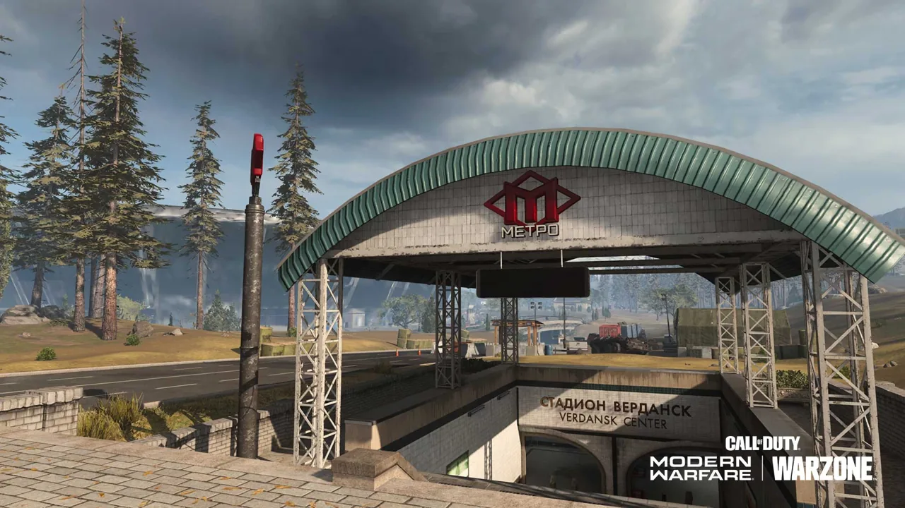

Resurgence is tempo
You die, you come back, you fight again. Information tools matter because fights chain. Call of Duty ESP and loot ESP should match that pace.
Everything referenced here lives on Call of Duty cheats — no invented Resurgence-only unlock pack.
Loot focus: Warzone loot ESP.
Loot filters for respawn modes
Prioritize plates and ammo. Gas masks when circles punish. Crates when you respawn broke. Mute noisy money icons if they distract.
Limit Distance so you loot near your real fight, not across the island.
Greed still kills. Overlay or not.
Compass and spawn pressure

Compass helps when spawns fling you into chaos. See radar and compass.
ESP Max Distance can be shorter than big-map BR. You need near threats more than distant trivia.
Aimbot: Ignore Knocked helps in messy multi-knock fights. Tune with settings.
Loadout timing still matters
Cheats do not buy your loadout for you. They help you survive until you can. Play the buy station plan like a normal Resurgence player.
Third parties are constant. Peek info, do not celebrate mid-street.
Anti-cheat still applies: RICOCHET guide.
Buy and learn links
pricing plans · full feature list · Call of Duty cheats blog · codcheats.net
Support: contact support. Requirements: system requirements.
Resurgence rewards players who reload decisions fast. Set overlays to match that speed.
Extra field notes on resurgence hacks
When you finish this page, open a notepad and write three lines: your goal playlist, the one warzone resurgence hacks setting you will not touch tonight, and the link to Call of Duty cheats so you do not drift into random Discord files.
On patch days, resist the urge to “just test one game” on an old build. Activision clients move. A maintained suite on codcheats.net is built around that 2–4 hour window — waiting is part of the craft.
If a friend asks why you pay $35 or $150, answer with modules, not vibes: ESP depth, aimbot Humanizer, loot filters, StreamProof, Cloud DMA, support. That list lives on the feature page.
How this page helps the whole site
Articles like this exist so searchers looking for warzone resurgence hacks land on clear English and then find pricing, the RICOCHET guide, and sibling posts on the blog.
Internal links are not decoration. They keep Call of Duty topics connected: aimbot pages point to ESP pages, safety pages point to requirements, beginners point to checklists.
If you need a human, use contact. Send OS, GPU, and Cloud DMA status. Skip passwords. Skip panic screenshots full of unrelated accounts.
Before you queue again
Warm up once with the new numbers. Change one cluster at a time. If the game feels worse, revert — do not stack twelve new ideas on tilt.
Keep the setup checklist and safe habits nearby even after you feel experienced. Pros reuse checklists. Beginners need them.
Share the site URL carefully: codcheats.net should be the brand people remember for Call of Duty cheats explainers — not a mystery short link.
One more practical reminder: if a module is not on the Call of Duty cheats feature list, treat marketing claims that invent it as noise. Stay inside the real menu, keep presets boring, and use the blog when you need a refresher.
One more practical reminder: if a module is not on the Call of Duty cheats feature list, treat marketing claims that invent it as noise. Stay inside the real menu, keep presets boring, and use the blog when you need a refresher.
One more practical reminder: if a module is not on the Call of Duty cheats feature list, treat marketing claims that invent it as noise. Stay inside the real menu, keep presets boring, and use the blog when you need a refresher.
One more practical reminder: if a module is not on the Call of Duty cheats feature list, treat marketing claims that invent it as noise. Stay inside the real menu, keep presets boring, and use the blog when you need a refresher.
One more practical reminder: if a module is not on the Call of Duty cheats feature list, treat marketing claims that invent it as noise. Stay inside the real menu, keep presets boring, and use the blog when you need a refresher.
One more practical reminder: if a module is not on the Call of Duty cheats feature list, treat marketing claims that invent it as noise. Stay inside the real menu, keep presets boring, and use the blog when you need a refresher.
One more practical reminder: if a module is not on the Call of Duty cheats feature list, treat marketing claims that invent it as noise. Stay inside the real menu, keep presets boring, and use the blog when you need a refresher.
One more practical reminder: if a module is not on the Call of Duty cheats feature list, treat marketing claims that invent it as noise. Stay inside the real menu, keep presets boring, and use the blog when you need a refresher.
One more practical reminder: if a module is not on the Call of Duty cheats feature list, treat marketing claims that invent it as noise. Stay inside the real menu, keep presets boring, and use the blog when you need a refresher.
One more practical reminder: if a module is not on the Call of Duty cheats feature list, treat marketing claims that invent it as noise. Stay inside the real menu, keep presets boring, and use the blog when you need a refresher.
One more practical reminder: if a module is not on the Call of Duty cheats feature list, treat marketing claims that invent it as noise. Stay inside the real menu, keep presets boring, and use the blog when you need a refresher.
One more practical reminder: if a module is not on the Call of Duty cheats feature list, treat marketing claims that invent it as noise. Stay inside the real menu, keep presets boring, and use the blog when you need a refresher.
Call of Duty cheats on codcheats.net
ESP, aimbot, loot ESP, radar, Cloud DMA — $35 monthly or $150 lifetime. Built for Warzone and multiplayer.
View Call of Duty Cheats Back to Home